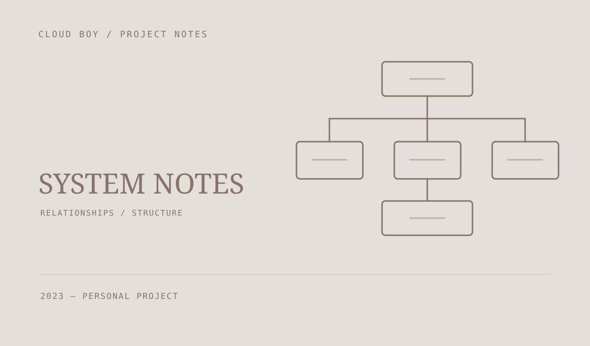

游戏系统设计图集
用结构图记录游戏 UI、角色系统与编辑器扩展的思考。把类之间的关系、资源打开流程和模块边界画出来，作为后续实现时的参照。

先把关系画清楚
这组图集用于整理游戏开发中的模块关系与交互流程。保存的游戏相关图包含 UI 布局、角色、编辑器插件以及部分玩法系统的结构记录。
从资源到编辑器窗口
其中的编辑器学习图追踪了 DataTable 资源从类型操作入口到模块创建编辑器，再到具体编辑窗口与控件的关系。图中的类名用于理解框架结构，并不代表整套编辑器由本项目实现。
一份持续可回看的笔记
结构图帮助把阅读框架源码、理解调用流程和设计自己的模块连接起来。本页的配图重新绘制为结构示意，记录这套学习与设计方法。